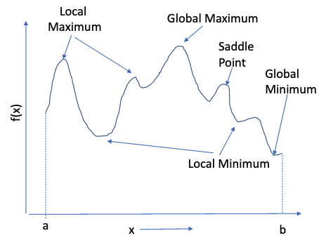
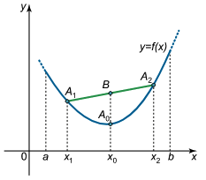
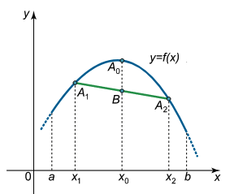

Optimization Modeling for Decision Support¶
Most engineering problems have multiple workable solutions (called feasible solutions). Usually we apply some metric (measurement) of fitness (such as cost, weight, yield, \(\dots\) , or a linear or nonlinear combination of multiple measures) that distinguish one solution from another. If a particular solution requires time-travel, that would be infeasible (circa 2022) and removed from consideration without bothering to determine its fitness in the other measures.
The mathematical expression of fitness is called the objective function (also merit function, cost function, performance function are some other frequently appearing names for the same thing - a measure of how “good” the solution is!). The supporting conditions, conservation laws, capacity restrictions, or other technical limitations that must be satisfied are called constraints (or design requirements, feasibility conditions, auxiliary conditions)
When selecting an optimal solution (or non-inferior solution) we seek design values that minimize or maximize the objective function while simultaneously satisfying all the constraints.
Note
Our least-squares regression analysis that led to the normal equations in line fitting is an example of an optimization problem. The objective function was the SSE, the constraints were mostly that the \(\beta_i\)’s are real valued numbers. This is an example of unconstrained optimization - a valuable subset of the overall optimization process.
For example, suppose we want to determine the lightest weight bridge that will satisfy a given set of design requirements. The objective function is the bridge weight expressed in terms of the dimensions of the structural elements. The constraints will be various force and moment relationships that must be satisfied (we want the bridge to actually work!). A typical problem is to determine the dimensions of the structural elements that will minimize the weight of the bridge, subject to the appliciable constraints. Such problems are known as optimization problems and solutions are found using mathematical programming.
Generally speaking solving linear and non-linear programming problems is relatively straightforward (given the right packages) but the formulation of the problem requires considerable care.
Warning
Recall in our problem solving process, the problem statement was a first step to success - in mathematical programming it is a vital step, and if done haphazardly the program will fail, when the actual problem has a solution. Development of the skill to deal with such an outcome is largely experience based - the abstraction process is also vital here.
Optimization Problem Characteristics¶
An optimization problem is written using the following logic.
Find values of the independent (design, policy, or decision are other common names for these variables) variables \(x_1,x_2,\dots,x_n\) that will minimize (or maximize) the objective function \(y=f(x_1,x_2,\dots,x_n)\).
The resulting solutions must also satisfy one or more constraint conditions usually expressed as equations or inequalities as:
\(g_{eq;j}(x_1,x_2,\dots,x_n) = 0\)
\(g_{le;j}(x_1,x_2,\dots,x_n) \le 0\)
\(g_{ge;j}(x_1,x_2,\dots,x_n) \ge 0\)
for \(j=1,2,\dots,m\) where \(m\) is the total number of constraints.
In addition, the permissible values of the independent variables are usually restricted to be non-negative as,
\(x_i \ge 0~\text{for}~~i=1,2,\dots,n\)
A further constraint, common in logistics problems is that the independent variables are integer.
Warning
Optimization problems that are integer constrained are difficult to solve elegantly. Don’t be fooled into thinking that a real-valued solution rounded to the nearest integer is “optimal”; it might not even be feasible. It is a reasonable hack to get started, and often is a good enough approximation - just check that the result is at least feasible before commiting to the solution.
Useful Optimization Jargon¶
Functions¶
Functions map a relationship between input(s) and output(s)
Functions can be of many types:
Mathematical, logical, rule-based
The mapping of inputs => outputs can be linear or nonlinear
The function can be one-dimensional or multi-dimensional; the inputs can similarily be univariate (one dimension) or multivariate (many dimensions)
Optima¶
Optimization means finding either a ‘maximum’ or a ‘minimum’ of a function. The optimum value is typically defined over a range of interest.

A local maximum occurs when its value is higher than other values in the vicinity; A local minimum occurs when its value is lower than other values in the vicinity. The global maximum is the largest value in the range (a,b); The global minimum is the smallest value in the range (a,b). A Saddle Point Occurs when the value of the function is higher on one side and lower on the other (the slope and curvature are zero at the point)
Convex¶
A function is said to be strictly convex when a line connecting any two points of the function lies strictly above the function

A function is convex if the second derivative is greater than or equal 0
Strictly convex if greater than
Concave¶
A function is concave function when a line joining any two points lies below the function The second derivative of a concave

A function is concave if the second derivative is greater than or equal 0
Strictly concave if less than
Global Optimum Values¶
A solution is a global optimum if it is better than or equal to all other feasible solutions across the entire search space.
Special Characteristics:
Scope: Covers the entire search space.
Performance: Provides the best possible solution across all feasible solutions.
Detection: Difficult to guarantee as it requires a comprehensive exploration of the search space.
Dependence on Starting Point: Less dependent on initial conditions if the algorithm is designed to avoid or escape local optima.
Algorithmic Example: Simulated Annealing and Genetic Algorithms use mechanisms to escape local optima and seek global optima.
Local Optimal Values¶
Local Optimum: A solution is a local optimum if it is better than or equal to all other feasible solutions in its immediate vicinity (i.e., within a neighborhood defined by a certain distance or perturbation).
Special Characteristics:
Scope: Limited to a neighborhood around the solution.
Performance: Provides the best solution within a restricted area of the search space but not necessarily the best overall.
Detection: Easier to detect as it requires evaluating neighboring solutions.
Dependence on Starting Point: Strongly dependent on the initial conditions and the path taken by the algorithm.
Algorithmic Example: Gradient Descent can easily get stuck in a local optimum due to its reliance on local gradient information.
Techniques to Escape Local Optima (in search of a global optimum)¶
Random Restart: Run the algorithm multiple times with different initial conditions to increase the chances of finding the global optimum.
Simulated Annealing: Uses a probabilistic technique to escape local optima by allowing uphill moves (worse solutions) with a probability that decreases over time.
Genetic Algorithms: Employs crossover and mutation to explore various parts of the search space and avoid being trapped in local optima.
Tabu Search: Utilizes memory structures to keep track of recent moves and prevent the algorithm from revisiting the same local optima.
Multi-start Methods: Similar to random restart but can include strategies to diversify the search space exploration.
Practical Implications:
Efficiency vs. Accuracy: Local optimization algorithms are often more computationally efficient but may not find the best overall solution. In contrast, global optimization algorithms are more computationally intensive but aim to find the best possible solution.
Application Suitability: Local optima are acceptable in applications where a “good enough” solution is sufficient and computational resources are limited. For critical applications requiring the best possible solution, finding the global optimum is essential, even at the expense of increased computational effort.
Examples in Real-World Problems:
Machine Learning: Training neural networks often involves optimization algorithms like Stochastic Gradient Descent, which may converge to local optima. Techniques such as learning rate schedules and batch normalization help in approximating global optima.
Operations Research: In logistics and scheduling, local optimization methods might provide quick and feasible solutions, whereas global optimization is necessary for strategic planning to minimize costs or maximize efficiency over the long term.
Summary
Aspect |
Local Optimum |
Global Optimum |
|---|---|---|
Definition |
Best solution within a local neighborhood |
Best solution in the entire search space |
Scope |
Limited, local area |
Comprehensive, entire search space |
Performance |
Good locally, not guaranteed globally |
Best overall |
Detection Difficulty |
Easier to detect |
Harder to detect |
Dependence on Start |
High |
Lower with appropriate algorithms |
Example Algorithms |
Gradient Descent |
Simulated Annealing, Genetic Algorithms |
Avoiding Traps |
Rarely escape local optima |
Use mechanisms to escape local optima |
Efficiency |
More efficient |
Less efficient, more comprehensive |
Application |
Suitable for “good enough” solutions |
Necessary for optimal solutions in critical tasks |
Distinguishing between local and global optima helps in choosing and designing optimization algorithms appropriate for the problem at hand, balancing between computational efficiency and solution quality.
Methods to Search for Solutions¶
Various algorithms exist to help find optima. Here we breifly explore a few more accessible (from a pedagogical sense)
Grid-Search Method¶
Grid-search is a straightforward and systematic technique for hyperparameter optimization, commonly used in machine learning and other optimization tasks.
Note
Grid-Search is also called:
Exhaustive Search: This term emphasizes the comprehensive evaluation of all possible parameter combinations within the defined grid.
Parameter Sweep: Indicates the process of sweeping through a range of parameter values systematically.
Hyperparameter Grid Search: Specifically highlights the application of grid search in the context of hyperparameter tuning for machine learning models.
Full Factorial Search: Derived from the experimental design terminology, where all combinations of factors (parameters) are evaluated.
Grid-based Hyperparameter Tuning: Combines the method (grid-based) and the application (hyperparameter tuning).
These other names sound extra cool, but the underlying approach is the same.
Grid-Search involves:
Parameter Space Definition: Define a discrete set of values for each hyperparameter that needs to be optimized. This forms a multi-dimensional grid of possible parameter combinations.
Exhaustive Search: Evaluate the objective function (e.g., model performance metric) for every possible combination of hyperparameter values on the grid.
Selection: Identify the combination of hyperparameters that yields the best performance according to the chosen metric.
Steps in Grid-Search
Setup: Choose the hyperparameters to tune and specify a range of possible values for each.
Combination Generation: Generate all possible combinations of hyperparameters based on the defined ranges.
Evaluation: For each combination, train and evaluate the model (or evaluate the objective function).
Optimal Parameters: Select the combination that achieves the best performance.
Characteristics
Exhaustiveness: Tests all possible combinations within the specified ranges, ensuring that the best combination within the grid is found.
Simplicity: Conceptually simple and easy to implement.
Parallelization: Evaluations are independent, making it straightforward to parallelize.
Advantages
Comprehensive: Ensures that all specified combinations are evaluated.
Implementation: Easy to implement and understand.
Baseline: Serves as a baseline for comparing more advanced optimization methods.
Disadvantages
Computationally Intensive: Can be very time-consuming and computationally expensive, especially with large parameter spaces and many combinations.
Granularity: Limited by the granularity of the parameter grid; finer grids increase computational cost.
Inefficiency: May test many combinations that are suboptimal, wasting resources.
Example Use Case
In machine learning, grid-search is often used to optimize hyperparameters of algorithms like support vector machines (SVMs), random forests, and neural networks. For example, tuning the C and gamma parameters of an SVM would involve specifying a range of values for each and using grid-search to find the combination that results in the highest cross-validated accuracy. Summary
Grid-search is a brute-force approach to hyperparameter optimization that is thorough but computationally expensive. It is best suited for problems with a small number of hyperparameters and relatively small parameter ranges. For larger, more complex problems, more efficient optimization techniques such as randomized search or Bayesian optimization might be more appropriate.
Unconstrained Minimization¶
Unconstrained minimization refers to the process of finding the minimum value of a function \(f(x)\) without any restrictions or constraints on the variables \(x\). This is a fundamental problem in optimization where the goal is to find the point at which the function attains its lowest value within the entire domain.
Characteristics
Objective Function: The function f(x)f(x) that needs to be minimized. It can be any real-valued function, typically assumed to be differentiable.
Variables: The set of variables x∈Rnx∈Rn over which the function is minimized.
No Constraints: Unlike constrained optimization, there are no bounds, equality, or inequality constraints placed on the variables.
Techniques for Unconstrained Minimization
Several numerical methods can be used to perform unconstrained minimization, including:
Gradient Descent: Iteratively moves towards the minimum by taking steps proportional to the negative of the gradient of the function.
Newton’s Method: Uses second-order derivative information (the Hessian) to find the minimum more rapidly, assuming the function is twice differentiable.
Quasi-Newton Methods: Approximates the Hessian matrix to balance the efficiency of Newton’s method with lower computational cost. The Broyden-Fletcher-Goldfarb-Shanno (BFGS) algorithm is a popular choice.
Conjugate Gradient Method: Suitable for large-scale problems, it combines gradient information with previous search directions to accelerate convergence.
Trust-Region Methods: Iteratively optimizes a simpler model (usually quadratic) within a region around the current point, adjusting the region size based on the model’s performance.
Steps in Unconstrained Minimization
Initialization: Choose an initial guess x0x0 for the variables.
Iterative Process: Apply an optimization algorithm to iteratively update the variables to move towards the minimum of the function.
Convergence Check: Evaluate convergence criteria (e.g., changes in function value or variable values fall below a threshold) to determine when to stop the iteration.
Solution: The final point x∗x∗ is considered the approximate location of the minimum.
Applications
Unconstrained minimization is widely used in various fields such as:
Machine Learning: Training models by minimizing loss functions.
Economics: Optimizing utility or cost functions.
Engineering: Design optimization without restrictions on design parameters.
Physics: Finding states of minimum energy.
Summary
Unconstrained minimization seeks the lowest value of a function without any restrictions on the variable values. It relies on various iterative numerical methods to find the solution efficiently. This type of optimization is fundamental and serves as a building block for more complex constrained optimization problems.
Unconstrained Minimization with Penalty Functions¶
In many real-world optimization problems, constraints are inevitable. However, sometimes it is beneficial to transform a constrained optimization problem into an unconstrained one to leverage more efficient unconstrained optimization algorithms. This transformation can be achieved using penalty functions.
Penalty Functions
A penalty function is an additional term added to the objective function to penalize violations of constraints. The idea is to convert the constrained optimization problem into an unconstrained problem by adding a penalty function that imposes a cost for violating the constraints.
Types of Penalty Functions
Quadratic Penalty Function: This function imposes a quadratic penalty on constraint violations. This type of penalty is useful for smooth functions but can lead to ill-conditioning for large penalties.
Linear Penalty Function: Imposes a linear cost for constraint violations. This function is simpler but might not be as effective for equality constraints.
Barrier Function: This type imposes an infinite penalty for infeasible solutions, effectively “barriering” the constraints. Barrier functions are useful in interior-point methods but require careful handling near the boundary of the feasible region.
Penalty Parameter
Penalty functions often include a parameter that controls the severity of the penalty. The value of penalty parameter (usually a multiplier) is crucial.
Large: Strongly penalizes constraint violations, pushing the solution towards feasibility but can cause numerical instability.
Small: Lessens the penalty impact, allowing the optimizer to explore more freely but might not enforce constraints effectively.
Steps Using Penalty Functions
Define the Penalty Function: Choose an appropriate penalty function based on the problem’s constraints.
Combine with Objective: Formulate the new objective function f(x)+P(x)f(x)+P(x).
Iterate: Use an unconstrained optimization algorithm to minimize the combined objective function.
Adjust Penalty Parameter: If necessary, iteratively adjust μμ to balance between minimizing the original objective and enforcing constraints.
Advantages and Disadvantages
Advantages:
Simplifies the problem by transforming it into an unconstrained form.
Allows leveraging efficient unconstrained optimization algorithms.
Disadvantages:
The choice of penalty function and weighting parameter are problem-specific and require tuning.
Can introduce numerical instability or ill-conditioning.
May require many iterations or adjustments to achieve a feasible solution.
Penalty functions are a powerful technique to approximate and enforce constraints by transforming a constrained optimization problem into an unconstrained one. This approach allows the use of efficient unconstrained optimization algorithms but requires careful tuning of the penalty function and parameters to balance feasibility and optimality.
Constrained Minimization¶
Constrained minimization refers to the process of finding the minimum value of a function f(x)f(x) subject to certain restrictions or constraints on the variables xx. These constraints can take the form of equality constraints, inequality constraints, or both. Problem Formulation
A constrained minimization problem is typically formulated as follows:
\(\text{min}~~~~~~~ f(x)\)
\(\text{subject to} g_i(x)<=0, i=1,\dots,m \)
\(~~~~~~~~~~~~~~~~~~~h_j(x)=0, j=1,\dots,p \)
where:
\(f(x)\) is the objective function to be minimized.
\(g_i(x)\) represents the inequality constraints.
\(h_j(x)\) represents the equality constraints.
\(x\) is the vector of variables to be optimized.
Types of Constraints
Inequality Constraints: These constraints restrict the solution to a feasible region where the constraint functions \(g_i(x)\) are less than or equal to zero.
Equality Constraints: These constraints restrict the solution to a feasible region where the constraint functions \(h_j(x)\) are exactly equal to zero.
Techniques for Constrained Minimization
Several numerical methods can be used to perform constrained minimization, including:
Lagrange Multipliers: A mathematical technique that introduces additional variables (Lagrange multipliers) to transform a constrained problem into an unconstrained one.
Karush-Kuhn-Tucker (KKT) Conditions: Generalizes the method of Lagrange multipliers for both inequality and equality constraints. These conditions provide necessary conditions for a solution to be optimal.
Interior-Point Methods: Approaches that iteratively improve the solution by exploring the interior of the feasible region, often using barrier functions to handle constraints.
Sequential Quadratic Programming (SQP): An iterative method that solves a series of quadratic programming subproblems, each approximating the original problem more closely.
Penalty and Barrier Methods: Transform the constrained problem into an unconstrained one by adding penalty or barrier terms to the objective function, penalizing constraint violations.
Steps in Constrained Minimization
Define the Problem: Specify the objective function \(f(x)\) and the constraints\(g_i(x)\) and \(hj(x)\).
Choose an Algorithm: Select an appropriate constrained minimization algorithm based on the problem’s characteristics.
Initialization: Choose an initial guess for the variables xx and any necessary parameters (e.g., penalty coefficients).
Iterative Optimization: Apply the chosen algorithm to iteratively update the variables, seeking to minimize the objective function while satisfying the constraints.
Convergence Check: Evaluate convergence criteria, such as changes in the objective function value or satisfaction of the constraints, to determine when to stop the iteration.
Solution: The final point \(x^*\) is considered the optimal solution that minimizes the objective function while satisfying all constraints.
Applications
Constrained minimization is widely used in various fields such as:
Engineering: Design optimization subject to physical or performance constraints.
Economics: Optimizing resource allocation with budgetary constraints.
Finance: Portfolio optimization with risk and return constraints.
Operations Research: Scheduling and logistics problems with resource and time constraints.
Summary
Constrained minimization involves finding the minimum of a function subject to restrictions on the variables. It requires specialized numerical methods to handle the constraints effectively. The choice of method depends on the problem’s specific constraints and structure. This type of optimization is essential for many practical applications where solutions must adhere to certain conditions.